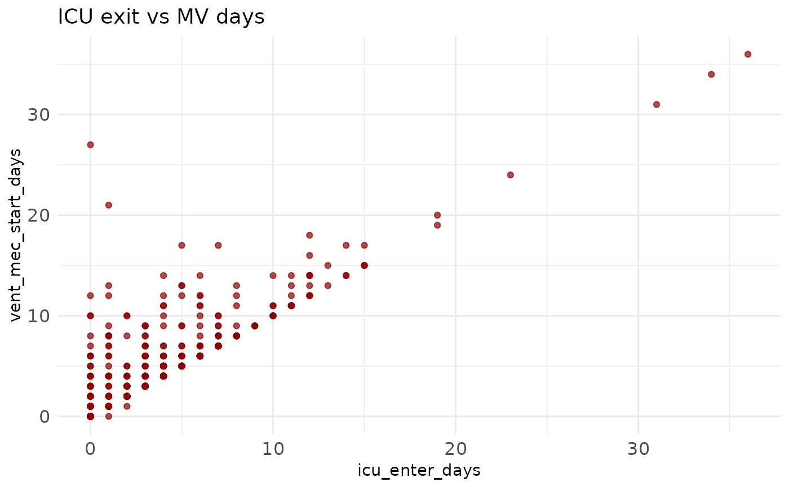
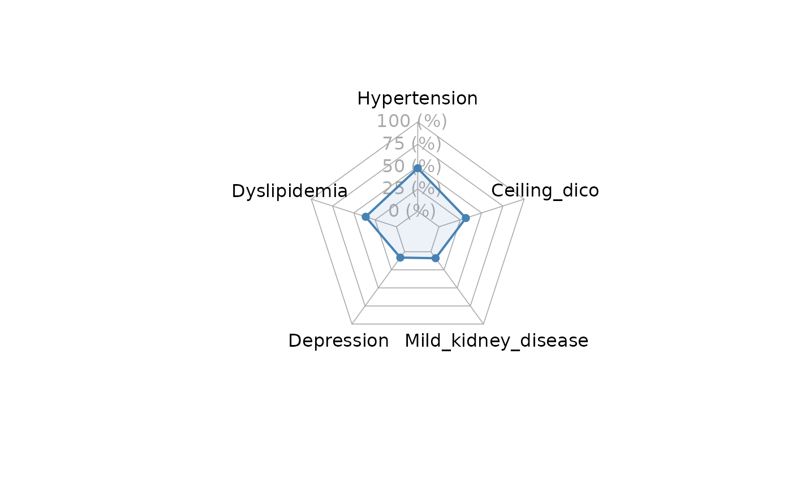

multi_plot: Flexible Static or Interactive Plotting of Variables
Source:R/multi_plot.R
multi_plot.RdGenerate a variety of plots—histogram, density, boxplot, barplot, violin, scatter, heatmap, or spider (radar)—either as static ggplot2 objects or interactive Plotly widgets.
Usage
multi_plot(
data,
x = NULL,
y = NULL,
plot_type = NULL,
interactive = FALSE,
fill_color = "steelblue",
color = "black",
bin_width = NULL,
group = NULL,
facet = NULL,
radar = NULL,
radar_color = "steelblue",
radar_labels = NULL,
radar_cex = 1,
radar_ref_lev = "Yes",
title = NULL,
x_lab = NULL,
y_lab = NULL,
legend_position = "right",
axis_text_angle = 0,
axis_text_size = 12,
title_size = 14,
theme_custom = ggplot2::theme_minimal()
)Arguments
- data
A data frame or tibble containing your data.
- x
Character; name of the variable for x-axis (required for all plot types except spider).
- y
Character; name of the variable for y-axis (required for boxplot, violin, scatter, and heatmap).
- plot_type
Character; one of
"histogram","density","boxplot","barplot","violin","scatter","heatmap", or"spider".- interactive
Logical; if
TRUE, returns a Plotly interactive plot (not available for spider/radar charts). Default:FALSE.- fill_color
Character; fill color for non-grouped geoms (default
"steelblue").- color
Character; outline/line color (default
"black").- bin_width
Numeric; bin width for histograms. If
NULL, computed automatically.- group
Character; name of grouping variable (optional).
- facet
Character; name of variable to facet by (optional).
- radar
Character vector; names of exactly 5 variables for spider plot (only for
"spider").- radar_color
Character or vector; border/fill color for spider chart (only for
"spider").- radar_labels
Character or vector; names of the variables for spider chart (only for
"spider").- radar_cex
Numeric; font size for variable labels in the spider chart (only for
"spider").- radar_ref_lev
Character; reference level for factors included in the spider chart (only for
"spider").- title
Character; plot title (optional).
- x_lab
Character; x-axis label (defaults to
x).- y_lab
Character; y-axis label (defaults to
yor"Count").- legend_position
Character; one of
"right","left","top","bottom","none"(default"right").- axis_text_angle
Numeric; rotation angle (degrees) for x-axis tick labels (default
0).- axis_text_size
Numeric; size of axis text in pts (default
12).- title_size
Numeric; size of plot title text in pts (default
14).- theme_custom
A ggplot2 theme object (default
theme_minimal()).
Value
A ggplot object (if interactive = FALSE or plot_type = "spider")
or a plotly object (if interactive = TRUE).
Details
Histogram: requires
x; usesgeom_histogram(). Use for continuous numeric variables only.Density: requires
x; usesgeom_density(). It should be numeric.Boxplot/Violin: require both
xandy; automatically groups byxor bygroupif provided, with dynamic dodge width.Barplot: requires
x; counts occurrences. Use for categorical variables only.Scatter: requires both
xandy; usesgeom_point(). Both variables must be numeric.Heatmap: requires both
xandy. Both variables must be categorical.Spider: requires
radar(vector of variables); usesfmsb::radarchart(), static only.
Examples
multi_plot(icu,
x = "icu_enter_days",
y = "vent_mec_start_days",
plot_type = "scatter",
color = "darkred",
title = "ICU exit vs MV days"
)
#> Warning: Removed 5330 rows containing missing values or values outside the scale range
#> (`geom_point()`).

multi_plot(
comorbidities,
radar = c("hypertension", "dyslipidemia", "depression", "mild_kidney_disease", "dm"),
radar_color = "steelblue",
radar_ref_lev = "Yes",
plot_type = "spider"
)
